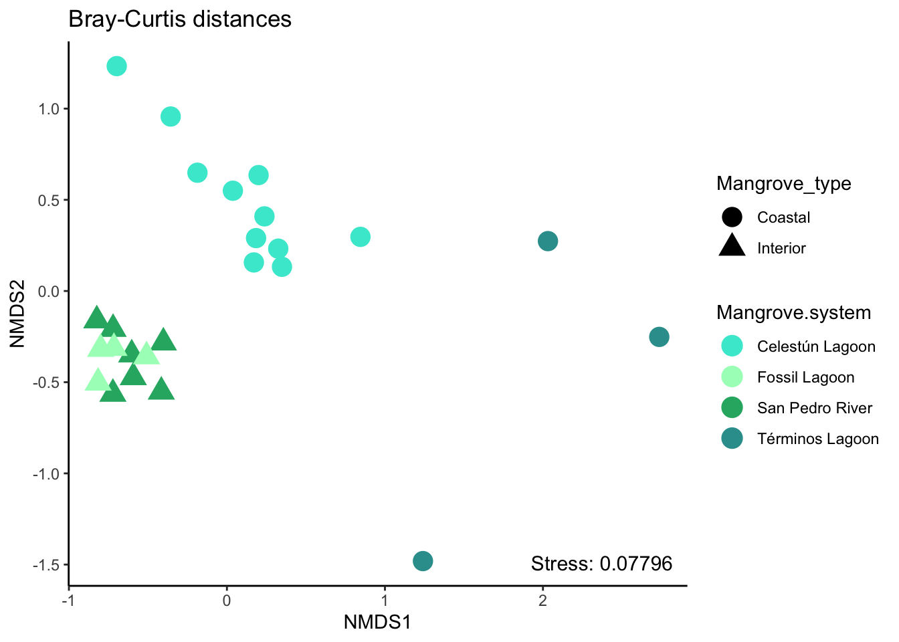
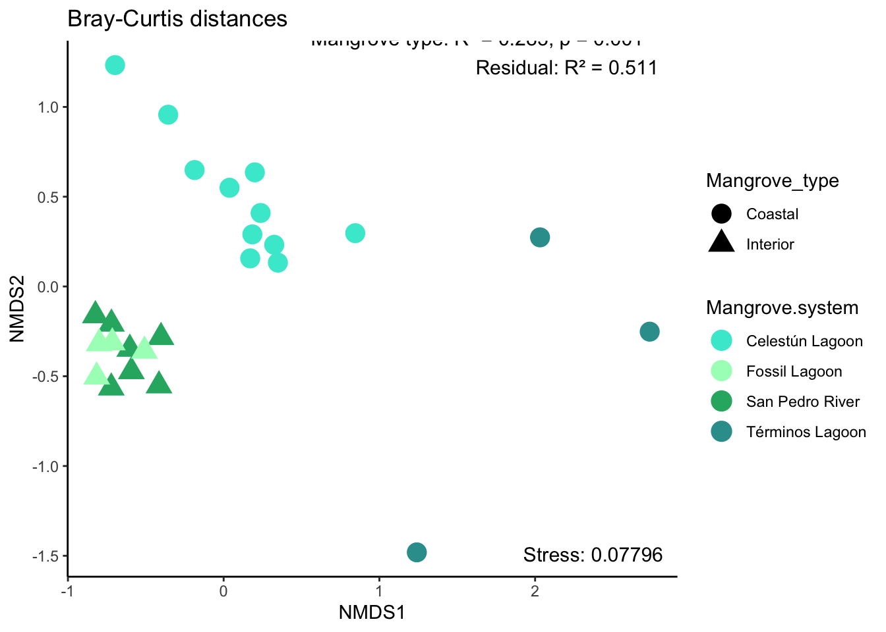
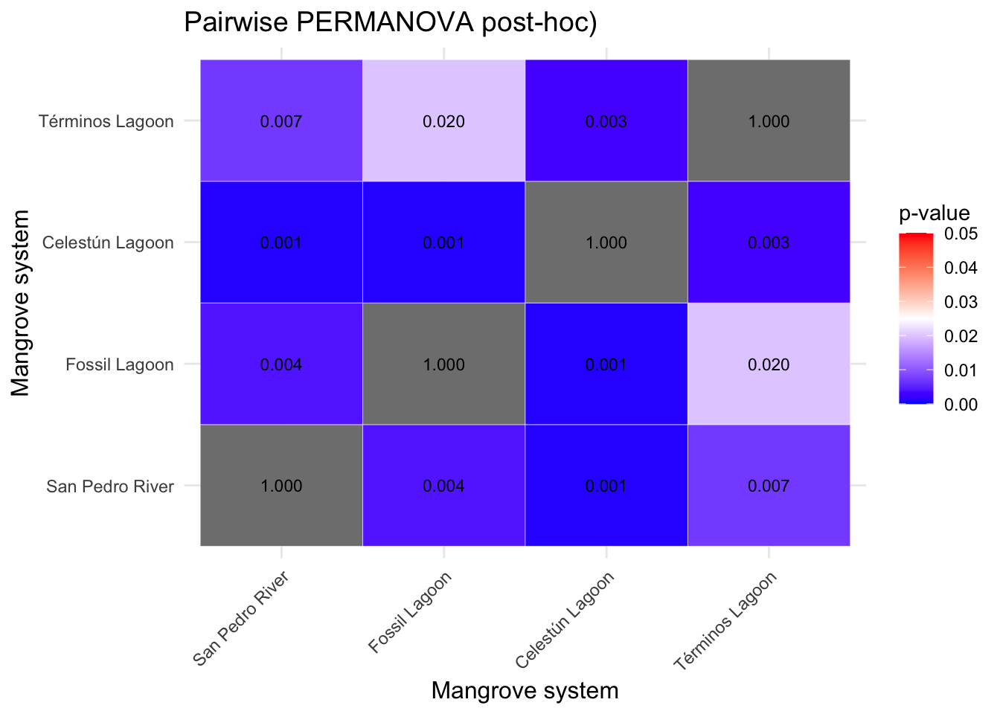

Beta diversity
The analysis of beta diversity was conducted using both NMDS and PERMANOVA to identify the factors that influenced the structure of the microbial community.
Load libraries and prepare data
#load data
physeq_qiime3 <- readRDS("rds/compare_mangroves/physeq_qiime3.rds")#Mangrove system colors
loc_colors <- c("Fossil Lagoon"= "#A7fcc1",
"San Pedro River" = "#26B170",
"Términos Lagoon" = "#329D9C",
"Celestún Lagoon" = "#41e8d3")# Extract data from phyloseq object
#library(phyloseq)
otu_data <- otu_table(physeq_qiime3, taxa_are_rows = TRUE)
metadata <- as(sample_data(physeq_qiime3), "data.frame")
sample_data <- data.frame(sample_data(physeq_qiime3))01. NMDS
Get distances and stress
Bray-Curtis dissimilarity distances are a measure of the dissimilarity between microbial communities based on their species composition.
# library(vegan)
# library(dplyr)
# distances
set.seed(123)
bray=vegdist(t(otu_data), method = "bray")
nmds_source_bray = vegan::metaMDS(bray, trymax = 20, k = 2)Run 0 stress 0.11
Run 1 stress 0.078
... New best solution
... Procrustes: rmse 0.111 max resid 0.476
Run 2 stress 0.161
Run 3 stress 0.078
... Procrustes: rmse 4.1e-05 max resid 0.00012
... Similar to previous best
Run 4 stress 0.11
Run 5 stress 0.133
Run 6 stress 0.11
Run 7 stress 0.078
... Procrustes: rmse 1.87e-05 max resid 6.06e-05
... Similar to previous best
Run 8 stress 0.161
Run 9 stress 0.0782
... Procrustes: rmse 0.015 max resid 0.057
Run 10 stress 0.133
Run 11 stress 0.11
Run 12 stress 0.166
Run 13 stress 0.145
Run 14 stress 0.078
... Procrustes: rmse 4.39e-05 max resid 0.000144
... Similar to previous best
Run 15 stress 0.0782
... Procrustes: rmse 0.015 max resid 0.0572
Run 16 stress 0.0782
... Procrustes: rmse 0.015 max resid 0.0571
Run 17 stress 0.155
Run 18 stress 0.0782
... Procrustes: rmse 0.015 max resid 0.0572
Run 19 stress 0.0782
... Procrustes: rmse 0.015 max resid 0.0571
Run 20 stress 0.078
... New best solution
... Procrustes: rmse 4.37e-05 max resid 0.000133
... Similar to previous best
*** Best solution repeated 1 timesPlot
# library(ggplot2)
# library(tidyverse)
nmds_plot_bray <- ggplot() +
geom_point(data=data.frame(scores_source_bray) %>%
rownames_to_column(var = "SampleID")%>%
left_join(metadata, by = "SampleID"),
aes(x=NMDS1, y=NMDS2, color = Mangrove.system,
shape = Mangrove_type),
size=5) + theme_linedraw()+
scale_fill_manual(values = loc_colors)+
scale_color_manual(values = loc_colors)+
theme(axis.text = element_text(colour = "black", size = 12),
axis.title = element_text(colour = "black", size = 12),
legend.text = element_text(size = 10),
legend.title = element_text(size = 12),
legend.position = "right",
legend.box = "vertical")+ theme_bw() +
labs(title="Bray-Curtis distances") +
ylab("NMDS2")+xlab("NMDS1")
## stress legend
nmds_plot_bray <- nmds_plot_bray +
annotate("text", x = Inf, y = -Inf,
label = paste("Stress:", var_stress_nmds_bray),
hjust = 1.1, vjust = -1.1, size = 4)
# show plot
nmds_plot_bray
02. PERMANOVA
To test the effects of Mangrove type and Mangrove system on the Bray-Curtis dissimilarity, a PERMANOVA analysis was conducted using adonis2.
# Extract and transpose OTU table
otu_mat <- t(otu_table(physeq_qiime3))
# PERMANOVA with adonis2
set.seed(123)
adonis_result <- adonis2(otu_mat ~ Mangrove_type * Mangrove.system,
data = sample_data,
method = "bray",
permutations = 999,
by = "terms")
# show adonis result
print(adonis_result)Permutation test for adonis under reduced model
Terms added sequentially (first to last)
Permutation: free
Number of permutations: 999
adonis2(formula = otu_mat ~ Mangrove_type * Mangrove.system, data = sample_data, permutations = 999, method = "bray", by = "terms")
Df SumOfSqs R2 F Pr(>F)
Mangrove_type 1 1.77 0.283 11.60 0.001 ***
Mangrove.system 2 1.29 0.206 4.23 0.001 ***
Residual 21 3.20 0.511
Total 24 6.25 1.000
---
Signif. codes: 0 '***' 0.001 '**' 0.01 '*' 0.05 '.' 0.1 ' ' 1Plot with PERMANOVA results
#add to plot
nmds_plot_bray_perm <- nmds_plot_bray + annotate("text", x = Inf, y = -Inf,
label = paste("PERMANOVA:",
"Mangrove system: R² = 0.206, p = 0.001\n",
"Mangrove type: R² = 0.283, p = 0.001\n",
"Residual: R² = 0.511"),
hjust = 1.1, vjust = -7, size = 4)
# Mostrar el gráfico
print(nmds_plot_bray_perm)
#save
ggsave("Figures/SurfaceComparison/beta-diversity.pdf", nmds_plot_bray_perm, width = 7.3, height = 5.5)03. Post-hoc adonis
To test differences between the Mangrove systems a Post-hoc pairwise PERMANOVA was conducted using pairwise.adonis
Pairwise adonis
## Post-hoc Mangrove.system
#library(pairwiseAdonis)
pairwise_adonis <- pairwiseAdonis::pairwise.adonis2(otu_mat ~
Mangrove.system, data = sample_data,
method = "bray", permutations = 999)Set of permutations < 'minperm'. Generating entire set.print(pairwise_adonis)$parent_call
[1] "otu_mat ~ Mangrove.system , strata = Null , permutations 999"
$`San Pedro River_vs_Fossil Lagoon`
Df SumOfSqs R2 F Pr(>F)
Model 1 0.274 0.256 3.09 0.003 **
Residual 9 0.798 0.744
Total 10 1.071 1.000
---
Signif. codes: 0 '***' 0.001 '**' 0.01 '*' 0.05 '.' 0.1 ' ' 1
$`San Pedro River_vs_Celestún Lagoon`
Df SumOfSqs R2 F Pr(>F)
Model 1 1.39 0.378 9.73 0.001 ***
Residual 16 2.28 0.622
Total 17 3.67 1.000
---
Signif. codes: 0 '***' 0.001 '**' 0.01 '*' 0.05 '.' 0.1 ' ' 1
$`San Pedro River_vs_Términos Lagoon`
Df SumOfSqs R2 F Pr(>F)
Model 1 1.15 0.476 7.26 0.014 *
Residual 8 1.26 0.524
Total 9 2.41 1.000
---
Signif. codes: 0 '***' 0.001 '**' 0.01 '*' 0.05 '.' 0.1 ' ' 1
$`Fossil Lagoon_vs_Celestún Lagoon`
Df SumOfSqs R2 F Pr(>F)
Model 1 1.04 0.351 7.03 0.004 **
Residual 13 1.93 0.649
Total 14 2.98 1.000
---
Signif. codes: 0 '***' 0.001 '**' 0.01 '*' 0.05 '.' 0.1 ' ' 1
$`Fossil Lagoon_vs_Términos Lagoon`
Df SumOfSqs R2 F Pr(>F)
Model 1 1.005 0.523 5.48 0.035 *
Residual 5 0.916 0.477
Total 6 1.921 1.000
---
Signif. codes: 0 '***' 0.001 '**' 0.01 '*' 0.05 '.' 0.1 ' ' 1
$`Celestún Lagoon_vs_Términos Lagoon`
Df SumOfSqs R2 F Pr(>F)
Model 1 1.01 0.297 5.07 0.003 **
Residual 12 2.40 0.703
Total 13 3.41 1.000
---
Signif. codes: 0 '***' 0.001 '**' 0.01 '*' 0.05 '.' 0.1 ' ' 1
attr(,"class")
[1] "pwadstrata" "list" P-values matrix
# heatmap
# library(ggplot2)
# library(reshape2)
# p-values of pairwise_adonis
p_values <- c(
"San Pedro River_vs_Fossil Lagoon" = 0.004,
"San Pedro River_vs_Celestún Lagoon" = 0.001,
"San Pedro River_vs_Términos Lagoon" = 0.007,
"Fossil Lagoon_vs_Celestún Lagoon" = 0.001,
"Fossil Lagoon_vs_Términos Lagoon" = 0.02,
"Celestún Lagoon_vs_Términos Lagoon" = 0.003
)
# matrix of p-values
locations <- c("San Pedro River", "Fossil Lagoon", "Celestún Lagoon", "Términos Lagoon")
p_matrix <- matrix(NA, nrow = length(locations), ncol = length(locations),
dimnames = list(locations, locations))
# Fill matrix with p-values (only for the upper half then make symmetrical)
pairs <- strsplit(names(p_values), "_vs_")
for (i in seq_along(pairs)) {
row_name <- pairs[[i]][1]
col_name <- pairs[[i]][2]
p_matrix[row_name, col_name] <- p_values[i]
p_matrix[col_name, row_name] <- p_values[i] # symmetrical
}
diag(p_matrix) <- 1 # compare with itself
# long format
p_melt <- melt(p_matrix)Heatmap of adonis posthoc
# heatmap
heatmap_plot <- ggplot(p_melt, aes(x = Var1, y = Var2, fill = value)) +
geom_tile(color = "white") +
scale_fill_gradient2(low = "blue", mid = "white", high = "red",
midpoint = 0.025, limits = c(0, 0.05),
name = "p-value") +
geom_text(aes(label = sprintf("%.3f", value)), color = "black", size = 3) +
theme_minimal() +
labs(title = "Pairwise PERMANOVA post-hoc)",
x = "Mangrove system", y = "Mangrove system") +
theme(axis.text.x = element_text(angle = 45, hjust = 1),
axis.title = element_text(size = 12),
plot.title = element_text(size = 14))
# Mostrar el gráfico
print(heatmap_plot)
04. Beta disper
To validate the dissimilarity of the data, and to determine whether the differences found are due to changes in composition or to variations in dispersion within groups, the homogeneity of the dispersions between Mangrove type and Mangrove system was calculated using betadisper. Subsequently, the significance of the differences in dispersion was calculated with permutest
# library(vegan)
# library(phyloseq)
# Bray distance matrix
dist_matrix <- phyloseq::distance(physeq_qiime3, method = "bray")By Mangrove system
# betadisper
disp_location <- betadisper(dist_matrix, sample_data$Mangrove.system)
print(summary(disp_location)) Length Class Mode
eig 24 -none- numeric
vectors 600 -none- numeric
distances 25 -none- numeric
group 25 factor numeric
centroids 96 -none- numeric
group.distances 4 -none- numeric
call 3 -none- call Permutest
# Significance permutest
perm_location <- permutest(disp_location, permutations = 999)
print(perm_location)
Permutation test for homogeneity of multivariate dispersions
Permutation: free
Number of permutations: 999
Response: Distances
Df Sum Sq Mean Sq F N.Perm Pr(>F)
Groups 3 0.143 0.0476 4.55 999 0.022 *
Residuals 21 0.220 0.0105
---
Signif. codes: 0 '***' 0.001 '**' 0.01 '*' 0.05 '.' 0.1 ' ' 1By Mangrove type
# Betadisper Mangrove_type
disp_mangrove_type <- betadisper(dist_matrix, sample_data$Mangrove_type)
print(summary(disp_mangrove_type)) Length Class Mode
eig 24 -none- numeric
vectors 600 -none- numeric
distances 25 -none- numeric
group 25 factor numeric
centroids 48 -none- numeric
group.distances 2 -none- numeric
call 3 -none- call # Significance permutest
perm_mangrove_type <- permutest(disp_mangrove_type, permutations = 999)
print(perm_mangrove_type)
Permutation test for homogeneity of multivariate dispersions
Permutation: free
Number of permutations: 999
Response: Distances
Df Sum Sq Mean Sq F N.Perm Pr(>F)
Groups 1 0.154 0.1537 7.2 999 0.014 *
Residuals 23 0.491 0.0213
---
Signif. codes: 0 '***' 0.001 '**' 0.01 '*' 0.05 '.' 0.1 ' ' 1Save rds beta diversity plot
saveRDS(nmds_plot_bray_perm, "rds/compare_mangroves/beta-diversity-surface-plot.rds")